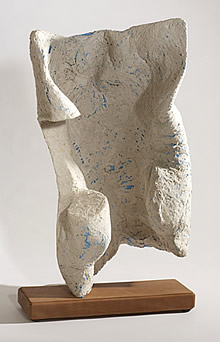
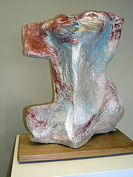
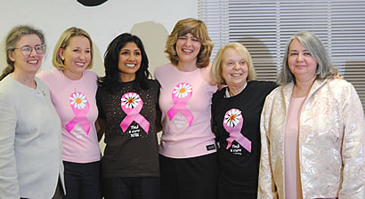

About the Book
Why is this book special?
We did it! Surviving Cancer: Our Voices and Choices (268 pages) is a source book written by 70 individuals who share their personal knowledge and expertise in the cancer process. Survivors, varying in age, provide insight into their individual experiences and choices. Dr. Kathleen Toomey, Medical Director of the Steeplechase Cancer Center, presents the concept of a “Cancer Team” of doctors and health care professionals, which is then reflected in the book. Each article adds a new voice.
The cancer team’s articles are arranged to correspond with the usual order of visits experienced by most cancer patients. The visits begin with the family physician, progress to the radiologist and her technician. Then we continue to hear from the oncologists, the surgeon, medical and radiation doctors, a reconstruction surgeon, a nurse practitioner, social workers and many other health care providers. Their information is interwoven with survivors’ narrations, often relating to the doctors’ comments, contributing to a subtle dialogue developed throughout the book; a gynecologist’s article is followed by the narration of a survivor of ovarian cancer, whose life was likely saved by a gynecological examination. Another doctor writes about male breast cancer, which precedes the experiences of a man who survived breast cancer and that of another man whose growth turned out to be benign.
Cancer organization leaders describe how their organizations benefit cancer patients and their loved ones. These articles follow narrations by survivors helped by the cancer organizations mentioned. Different organizations suit different personalities. Articles on research, clinical trials, financial assistance, as well as poetry relating to cancer experiences, are included in this compilation. Each voice and choice, discussed in this book, provides helpful information to ease a patient’s path throughout their cancer journey.
Twenty percent of the profits from the sale of the book will be given to cancer causes.
How did this project start?
My kids persuaded me to get that mammogram that showed a small cancer in my breast. After the initial fear subsided, our family searched to find out what to do next. The process was complicated and occasionally frustrating. Ultimately, a biopsy confirmed the need for a surgeon to remove the cancer and several lymph nodes. The sentinel node indicated it was a good thing that there had been an early mammogram. As a result, I wanted to motivate others to be aware of the importance of early detection… but how?
Several months later, during my first radiation treatment, I noticed one side of the room was filled with cradles. They were piled on top of one another on shelves that covered an entire wall. This type of cradle, which is used to hold patients in place during their treatments, is molded to each individual. Therefore, it cannot be reused for another patient after the procedure is complete. I recycled these as armatures for sculptures that could help make others aware of the need for early detection.
The illustrations in our book are photographs of some of these cradle sculptures that depict feelings or experiences, based on comments made by cancer patients. “Jumping for Joy, (the treatment is over)” was the ultimate goal for a journey which probably started with a fear. Many of us experienced some similar feelings.
A complete series of sculptures was first shown at Steeplechase Cancer Center, Somerville , NJ, and then at The Center for Contemporary Art in Bedminster, N.J. The sculptures were then shown in other galleries to encourage conversation and early detection. The concept for compiling Surviving Cancer: Our Voices and Choices originated in a panel discussion on breast cancer held during the second show.
Four survivors and two doctors were on the panel. I was awestruck by those survivors. They were young, articulate, beautiful and anxious to provide information. The doctors shared facts that had taken me weeks to gather. After the presentation, questions and answers stimulated a very lively conversation between the panel and the audience. We discovered that many questions urgently needed answers, and that evening, the idea for a book with this type of interaction was born.
The first five articles came from our panelists. Shortly thereafter, we circulated posters and flyers to gather more survivors’ articles. Survivors recommended doctors. Doctors recommended other doctors. The circle widened quickly and now, at last, we have our book! More important, if you are faced with cancer “Surviving Cancer: Our Voices and Choices is addressed to you.
About the Compiler
Marion R. Behr is an experienced publisher, writer and artist and is the compiler of Surviving Cancer: Our Voices & Choices, as well as the owner of WWH Press LLC.
Marion created the first national survey of women working from home in the 1970's and after receiving thousands of responses from women, she originated the concept of the Homebased Business, as opposed to the cottage industry, and formed Women Working Home Inc. with Wendy Lazar, a co- graduate from Syracuse University. Marion and Wendy co-authored two editions of Women Working Home: The Homebased Business Guide and Directory and sold fifty thousand copies.
Marion later received a Presidential Appointment to The White House Conference on Small Business and her presentations to the US Labor Department and Senate helped to change laws on home based businesses.
Marion and her husband Omri co-invented a non toxic etching process, which replaces acid but incorporates all the traditional etching methods. This process, patented as Electroetch, is now in many universities including Stanford, Juneau, Fairbanks and Syracuse, and in studios internationally.
Marion is also involved in sculpting and painting and runs an art only blog MyLyne with the goal of establishing text free communication by using drawing as an international language.
Marion's artwork and personal details can be found on her personal website.